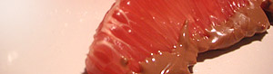

Pomelos mit Schokoladenguss
4 von 6pomelo schälen und einzelne schnitze aus ihrer haut lösen. schokolade im wasserbad schmelzen und pomelos darin eintauchen. nach belieben mit likör (hier allerlei 43%) betreufeln.

pomelo schälen und einzelne schnitze aus ihrer haut lösen. schokolade im wasserbad schmelzen und pomelos darin eintauchen. nach belieben mit likör (hier allerlei 43%) betreufeln.

Montagsplausch Nr. 68. Der Abend hiess «fajitas».